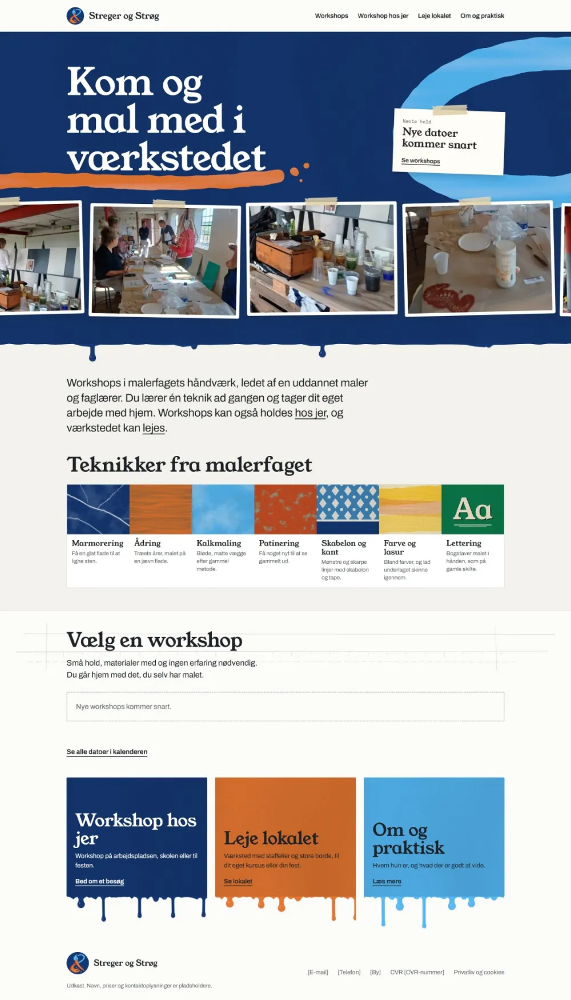

Streger og Strøg
Hjemmeside til et malerværksted med workshops i malerfagets håndværk.
Hjemmeside · Under udvikling
Under udvikling. Siden er ikke lanceret endnu. Skærmbillederne viser et udkast, og navne og tekster kan ændre sig.

- Branche
- Kreative workshops
- Opgave
- Ny hjemmeside
- Status
- Under udvikling
Opgaven
Streger og Strøg holder workshops i malerfagets håndværk, som marmorering, ådring og kalkmaling. Siden skal vise de kommende workshops, forklare teknikkerne og gøre det let at spørge om en workshop ude hos jer eller at leje værkstedet.
Løsningen
En varm, håndlavet stil med penselstrøg, tape og drypkanter, der passer til et værksted. Billeder fra rigtige workshops øverst, og teknikkerne vist som farveprøver. Siden er lavet til både mobil og computer.

Siden er ikke lanceret endnu. Navne og tekster på den er et udkast.
Skal vi tage en snak?
Fortæl kort, hvad du har brug for, så vender jeg tilbage.